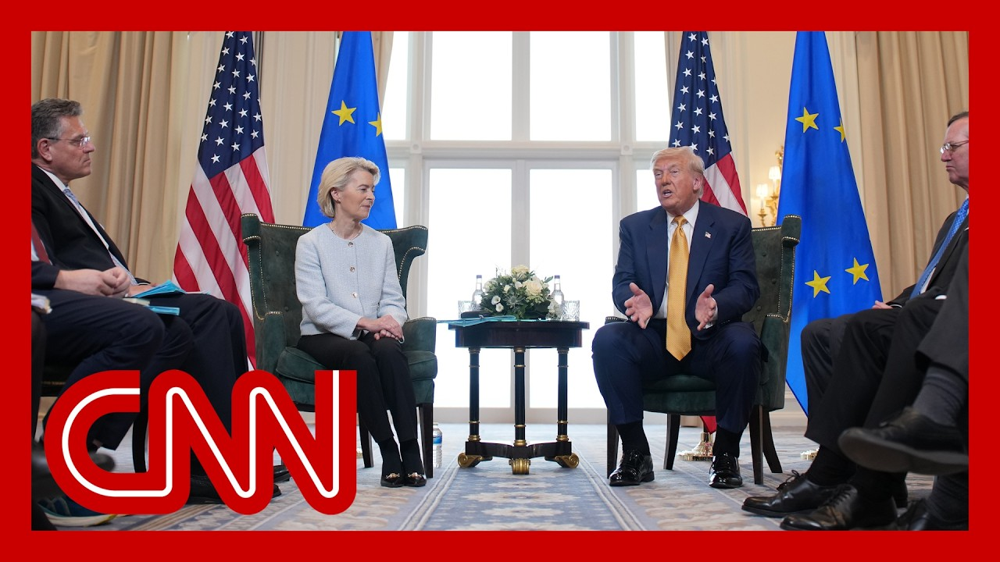

【CNN News 20250728 特朗普高调施压欧盟争取史上最大贸易协议，谈加沙援助显不满，炮轰风电与移民政策】
Summary: President Trump and EU Commission President Ursula von der Leyen discuss trade relations, tariffs, and other international issues during a meeting in Scotland.
摘要： 特朗普总统和欧盟委员会主席冯德莱恩在苏格兰会晤期间讨论了贸易关系、关税和其他国际问题。

⏱️ Estimated Reading Time: 43 min.
📚 四级生词 📚 六级生词 📚 雅思生词 📚 托福生词 📚 专八生词 📚 SAT生词 📚 考研生词 📚 GRE生词 📚 高考生词 📚 其它生词
Thank you very much.
非常感谢。
It's a beautiful Sunday in Scotland, and we thought we could cut things short by and certainly travel distance by having our meeting here.
这是苏格兰一个美好的周日，我们认为在这里会面可以缩短行程节省时间。
So we discussed options and I just it's an honor to have the president of the European Union with us.
我们讨论了各种方案，能与欧盟主席共处是我的荣幸。
Ursula has been, really done a terrific job for them, not for us, but she's done a great job, and, she's highly respected by us also.
冯德莱恩为他们（欧盟）做了出色工作——不是为我们——但她做得很好，我们也非常尊重她。
And, we look forward to talking to see if we can do something.
我们期待通过商谈看看能否有所作为。
we've had, a very good relationship over the years, but it's been a very one sided transaction, very unfair to the United States.
多年来我们关系良好，但交易一直非常单边化，对美国极不公平。
And I think both sides want to see fairness.
我认为双方都希望公平。
But it's been a very, very one sided deal.
但这始终是个极度单边的协议。
And it shouldn't be.
本不该如此。
And so we're here with her very brilliant staff and hopefully will resolve a few issues.
现在我们与她优秀的团队在一起，希望能解决一些问题。
But it's a great honor.
这是莫大的荣幸。
You know, we just built this ballroom and we're building a great ballroom at the White House.
我们刚建成这个宴会厅，白宫也正在建造一个宏伟的宴会厅。
The White House has wanted a ballroom for 150 years, but they never had a real estate person.
白宫150年来一直想要宴会厅，但从未有过懂房地产的总统。
You know, nobody no president knew how to build a ballroom.
没有哪位总统知道如何建造宴会厅。
But this just opened, you know, a relatively short time ago, and it's been quite the success.
这个（宴会厅）刚启用不久，已获得巨大成功。
And, I think I was just saying I could take this one, drop it right down there, and it would be beautiful.
我刚才还说，把这个直接放到白宫都会很完美。
This is exactly what they wanted.
这正是他们想要的。
But it's an honor to have you at the new ballroom at Turnberry and thank you very much.
很荣幸能在特伯里新宴会厅接待你们，非常感谢。
Thank you.
谢谢。
Thank you very much, Mr. President.
非常感谢您，总统先生。
Thank you very much for inviting me here.
非常感谢您的邀请。
Indeed it is today about, trade between the European Union and the United States.
今天确实关乎欧盟与美国的贸易。
We are together the two largest economies worldwide.
我们是全球前两大经济体。
Right.
是的。
if you look at the trade volume, it's the biggest trade volume globally with $1.7 trillion among us.
我们的双边贸易额达1.7万亿美元，是全球最大贸易规模。
And if you look at our markets, it's a huge market, 800 million people, if you take the United States and the European Union.
我们的市场覆盖8亿人口。
So, I'm very much looking forward to the discussions we will have now.
非常期待接下来的讨论。
our staff have done some of the heavy lifting, but now it's on us.
团队已完成基础工作，现在取决于我们。
And, you are known as a, tough negotiator and dealmaker.
您以强硬谈判者和交易促成者著称。
What is front and fair and what is in front.
关键在于公平。
Of us important.
对我们很重要。
People.
人民。
We are successful.
我们会成功。
I think it would be the biggest deal each of us has ever struck.
这将是双方有史以来最大协议。
So I'm very much looking forward.
非常期待。
Never struck by anybody.
前所未有。
That's yeah, that's true.
确实如此。
Right now we have that, that honor goes to Japan.
目前纪录保持者是日本。
We just struck a deal with Japan, as you know, and they were very close to a deal with China.
我们刚与日本达成协议，他们此前几乎与中国谈成。
We really sort of made a deal with China.
我们也算与中国达成了协议。
But we'll see how that goes.
拭目以待。
And we have numerous other deals.
还有其他多项协议。
And mostly I'm just going to charge tariffs.
主要是征收关税。
And you know, it's not a deal per se, but people are going to pay tariffs.
虽非协议本身，但人们必须付关税。
And we're doing them at the low end at the high end because we don't want to hurt anybody.
我们设定高低不同税率以免伤害任何人。
And pretty well.
效果不错。
But, you and I both figured this is, this is really the biggest trading partnership in the world.
我们都明白这是全球最大贸易伙伴关系。
So we should give it a shot, right?
应该尝试达成协议，对吧？
Yeah.
是的。
Very much looking forward to that.
非常期待。
thank you very much.
非常感谢。
I do too, any questions on Friday?
我也期待，周五前有问题吗？
But the chances of a deal, 50%, maybe.
达成概率约50%。
It seems like you're in quite a good thing.
您似乎状态不错。
How would you rate those chances now?
您现在评估概率如何？
I'm actually not in a good mood, but I will tell you, I think the chances are.
其实心情不好，但我觉得概率...
Yeah, I think I would say probably 5050 of making a deal.
约50%。
I hope.
希望达成。
I'd like to make a deal.
我希望达成协议。
I think it's good for both, but that's a 5050 decision made.
对双方都好，但成败各半。
Sticking points on.
分歧在于...
we have 3 or 4 sticking points I'd rather not get, and we'll be discussing them, but, I think the main sticking point is fairness.
有3-4个难点，主要在于公平性。
Okay.
明白。
Please.
请说。
And if I'm honest.
坦白说...
Is it about money?
是钱的问题吗？
So why don't you give me.
请解释。
no, the golf was.
不，高尔夫...
The golf was beautiful.
高尔夫很棒。
It's.
这是...
Golf can never be bad.
高尔夫从不会糟。
Even if you play badly.
即使打得差。
It's, It's still good.
依然美好。
If you had a bad day on the golf course, it's okay.
球场表现不佳也没关系。
it's better than other days, but, no, I think, I look forward to this meeting.
比其他日子好，我期待这次会晤。
we've had a hard time, with trade with Europe, very hard time.
与欧洲贸易很艰难。
I'd like to see it resolved.
希望解决。
But if it isn't, well, you know, have tariffs and they'll do what they have to do, but we have a good chance of getting it resolved.
若不成，就征税，但很有希望解决。
We'll probably know in about an hour.
一小时内见分晓。
It shouldn't take that long.
无需太久。
It's, you know, it's complicated but not really complicated when you get right down to it.
看似复杂实则不然。
Right.
对。
Well, pharmaceutical first of deadline.
制药业期限优先。
Is there any chance of that?
有可能吗？
No, no, the August 1st is there for everyone.
8月1日对所有人生效。
The deals all start on August 1st.
所有协议8月1日启动。
Most of the deals other than steel and aluminum, which we've been getting, 50% tariffs from, I guess just about everybody.
除钢铁铝业外，几乎所有行业都面临50%关税。
And those have come in and we've taken in, you know, hundreds of billions of dollars just on steel and aluminum.
仅钢铝关税就收入数千亿美元。
You see, in the numbers.
数据可见。
We had a tremendous amount of money coming over the last month.
上月收入惊人。
And it's coming in, you know, very rapidly, which is fair.
增速很快，这很公平。
We have a lot of, steel mills and plants, aluminum mills and plants being built.
新建了许多钢厂铝厂。
We have a lot of AI being built, and we have a lot of auto plants being built or going to be built because they don't want to pay tariffs.
还建了许多AI和汽车工厂——他们想避税。
So, you know, if they don't want to pay tariffs, the best way to do it is just build your plant in the United States.
不想付关税就该在美国建厂。
Yes, please.
请说。
What do you expect.
您预期...
From the Europeans in terms of coping with that one piece?
欧洲如何应对这点？
Many components.
涉及多领域。
Well, they have to open up to American products.
他们必须对美国产品开放市场。
You know, we're open to European products that we have been for forever.
我们一直对欧洲产品开放。
I don't think we have we just about don't have any I don't think we have any product we simply can't sell.
我们几乎没有不能卖的产品。
I guess you could get a little bit cute with chips, but that's, you know, a little bit different category, you know, Europe is very closed.
芯片可能特殊些，但欧洲市场非常封闭。
We don't sell cars into Europe.
我们汽车进不了欧洲。
we don't sell essentially agriculture of any great degree.
农产品也难进入。
They want to have their farmers do it and they want to have their car companies do it.
他们保护本国农业和汽车业。
I'm just I'm not saying anything that nobody knows that we have, a rough situation.
众所周知我们处境艰难。
If we want to sell cars in Europe, we're not allowed to.
想卖车去欧洲却被禁止。
And, as you know, they sell millions and millions of cars.
他们却卖数百万辆车到美国。
Mercedes, BMW, so many different, Volkswagen.
奔驰、宝马、大众等。
so many different cars and so many millions of cars, I would imagine.
数量惊人。
Number one, I didn't look at that, but I would imagine number one by far more so than even Japan.
虽未查数据，但肯定远超日本。
Japan sells a lot of cars, too.
日本也卖很多车。
But the Japan deal worked out very favorable, you know, very good.
但日本协议很有利。
I think I hope for them to, and, that's what we want to do, make everybody happy.
希望欧洲也能如此，皆大欢喜。
say it?
请说？
Israel be doing more to allow food aid to Gaza.
以色列应允许更多粮食援助进入加沙。
What is you saying Israel?
您对此看法？
Should Israel be doing more to allow food into Gaza?
以色列是否应允许更多粮食进入加沙？
Well, you know, we gave 60, million dollars two weeks ago and nobody even acknowledged it for food.
我们两周前提供6000万美元粮食援助却无人感谢。
And it's terrible.
很糟糕。
you really at least want to have somebody say thank you.
至少该有人道谢。
No other country gave anything.
其他国家分文未出。
We gave $60 million two weeks ago for food for Gaza.
我们为加沙提供6000万美元粮食援助。
nobody acknowledged it.
无人认可。
Nobody talks about it.
无人提及。
And it makes you feel a little bad when you do that and, you have other countries not giving anything.
这让人心寒。
none of the European countries, by the way, gave I mean, nobody gave but us and nobody said, gee,
欧洲国家都未援助。
And it would be nice to have at least a thank you.
至少该有感谢。
And I took a lot of heat, you know, when I, when I do that, a lot of people are unhappy about that because they say, well, why are we doing it to nobody else?
我因此受批评，人们质问为何只我们援助。
But I think we had a humanitarian reason for doing it.
但这是出于人道主义。
What's going to happen?
未来如何？
I don't know, I can tell you that Hamas, as I said, what happened at the end, you know, we've gotten back a lot of hostages.
哈马斯最终交还许多人质。
a tremendous number of hostages, most of them, now we have dead hostages, and the mothers want them back.
多数已遇难，但母亲们想要回遗体。
And we have 20 people approximately, but that are living.
现约有20名生还者。
But we have a lot of bodies, and the parents want those bodies as much as they would want their child.
父母们渴望要回遗体。
If that child were alive.
如同孩子活着时那样。
I was I met with parents that were.
我见过这些父母。
It was so sad.
非常悲伤。
sir, please get my son back.
"先生，请带回我儿子"
How is your son doing?
"他怎样了？"
Well, he's dead, but they have his body, and it's so important.
"已遇难，但遗体在他们手中，这很重要"
It's more important.
这更重要。
It's almost like more.
几乎更...
But it's as important as if the child were living.
与孩子活着同等重要。
These people were, I mean, they're devastated.
这些父母心碎。
And I said, when you get it down to a certain number, you're not going to be able to make a deal with Hamas, because once they give them up, then they feel that that's going to be the end of them.
当人质减少到某数量，哈马斯就不愿交易，因交出人质意味着终结。
And what I said is exactly true.
事实如此。
they had a routine discussion the other day, and all of a sudden they hardened up.
前几天谈判时他们突然强硬。
They don't want to give them back.
不愿交还。
And so Israel is going to have to make a decision.
以色列必须做决定。
I know what I do, but I don't think it's appropriate that I say, but, Israel is going to have to make a decision.
我有想法但不便说，以色列须做决定。
Mr. president, when you are in the Middle East, you talked about the images coming out of Gaza, understanding kids.
总统先生，您在中东时谈及加沙儿童惨状。
Those images are still going on much worse than children starving.
情况比儿童挨饿更糟。
What do you what do you see?
您看到什么？
We're feeling.
我们感受如何？
Well.
这个...
It's terrible.
很可怕。
when I see the children and when I see, especially over the last couple of weeks, and people are stealing the food, they're stealing the money.
最近尤其看到儿童挨饿，人们抢粮抢钱。
They're stealing the money for the food.
抢购粮钱。
they're stealing weapons.
抢武器。
They're stealing everything.
抢一切。
It's a mess.
一片混乱。
That whole place is a mess.
整个加沙混乱。
the Gaza Strip, you know, was given many years ago so that they could have peace.
多年前设立加沙是为和平。
That didn't work out too well when Israel gave that up.
以色列撤离后适得其反。
Whoever was the prime minister at the time who I know who it was, but it was not exactly a very clever thing to do, because that was given so that they finally have peace and it's actually made the situation worse.
当时总理（我知道是谁）此举不明智，本想促和却恶化局势。
But we'll see what happens.
静观其变。
I think Iran is acting up.
伊朗在挑衅。
I think that we have a lot of people, like we have Venezuela acting up in a different way.
委内瑞拉也在以不同方式挑衅。
They're sending they continue to send people that we rebuff to our border.
持续遣送被拒人员到我们边境。
They can continue to send drugs into our country.
还输送毒品。
Venezuela.
委内瑞拉。
Yeah.
是的。
They've been very nasty and we can't let that happen.
行为恶劣，我们不能容忍。
But we and we have other countries do we do have and this is just getting a little off subject, but we have now the safest border we've ever had.
虽然跑题，但我们边境现在史上最安全。
And I think in many respects we probably have the most successful.
多方面都最成功。
And I say it all the time, every leader.
我常对各国领导人说。
When I went to NATO the other day, every leader said, you have the hottest country in the world.
日前北约会议上，各国领导人都说美国是全球最火热国家。
We have the hottest country Now we're taking in hundreds of billions of dollars.
我们正吸纳数千亿美元。
we have the highest stock market we've ever had.
股市历史新高。
We have the best numbers we've ever had, but we have hundreds of billions of dollars pouring into our country.
各项指标最佳，资金源源涌入。
And I think it's, the hottest.
最火热。
And by the way, one year ago, our country was dead.
一年前美国还死气沉沉。
We had a dead country because of an incompetent president and incompetent Democrats.
因为无能总统和民主党。
All they know how to do is talk and think about conspiracy theories and nonsense.
他们只会空谈阴谋论。
If they'd waste their time talking about America being great again, it would be so much nicer, so much easier.
若把时间用在让美国再伟大上会更好。
Be very successful.
非常成功。
But we were a dead country and now we have the hottest country anywhere in the world.
曾经死气沉沉，如今全球最火热。
Yeah.
是的。
Any other question?
还有其他问题吗？
The president said President Trump on this particular deal, if you managed to do a deal today, will that be the end of the matter?
关于此协议，若今日达成是否就彻底解决？
Or could there be more tariffs coming, particularly on no.
还会有更多关税吗？
If we do a deal today with the European Union, that will be the end of it.
今日若达成协议就彻底解决。
We're not won't we'll go, I guess a number of years at least before we have to even discuss it again.
至少多年内无需再议。
No, that would be the end of it for and this is the biggest deal.
这是最大协议。
People don't realize this is bigger than any other deal we have.
比我们其他协议都大。
great countries, great countries that I'm familiar with.
伟大的国家。
Many of them.
许多。
So are you.
你也是。
And this is really the biggest deal.
这确实是最大的协议。
This is the I guess we're the biggest, out there.
我想我们是最大的。
And they're the second.
他们是第二。
And when we come together, this will be the biggest deal.
当我们联手时，这将是最大的协议。
If we if that happens.
如果这能实现的话。
And it could happen.
这是有可能的。
Should happen.
应该实现。
Okay.
好的。
And one pharmaceuticals will be I mean could be we'll do something but basically pharmaceuticals won't be part of it because we have to have them built made in the United States.
制药行业可能我们会做些安排，但基本上不会纳入协议，因为我们必须确保它们在美国生产。
And we want them And I think it's easy to say, and I think it's important to say pharmaceuticals, are very special.
我们希望如此，而且制药行业非常特殊，这一点很重要。
We can't be in a position where we don't have.
我们不能处于无法自给自足的境地。
Well, we're relying on other countries now.
我们现在依赖其他国家。
Europe is going to make pharmaceuticals, drugs and everything else for us to a lot.
欧洲为我们生产大量药品和其他产品。
But we're going to have also our own.
但我们也要有自己的生产能力。
Question for president.
向总统提问。
Yes.
是的。
Can you give your assessment of what you feel the chances of a deal of the best?
您认为达成协议的最佳机会有多大？
We just talked about a 5050 chance and the biggest obstacle being fairness.
我们刚刚讨论了五五开的机会，最大的障碍是公平性。
What would you say are those things for you?
您认为这些因素是什么？
I think the president is right.
我认为总统是对的。
We have a 50 to 50% chance to strike a deal.
我们有50%的机会达成协议。
And indeed it is about rebalancing.
这确实是关于重新平衡。
So you can call it fairness.
你可以称之为公平。
You can call it rebalancing.
也可以称之为重新平衡。
we have a surplus.
我们有顺差。
The United States has a deficit, and we have to rebalance it.
美国有逆差，我们必须重新平衡。
You have an excellent trade relation.
我们有很好的贸易关系。
It's a huge volume of trade that we have together.
我们的贸易量非常大。
so we will make it more sustainable.
因此我们将使其更可持续。
Trump can use investors in 15 a 15% tariff rates for the EU.
特朗普可以对欧盟投资者征收15%的关税。
Better meaning lower.
最好是降低。
No, it's a good time to return to Gaza and meet the British Prime Minister tomorrow.
不，现在是回到加沙问题并明天会见英国首相的好时机。
He's going to ask you to consider again peace talks between Israel and Hamas.
他将要求您重新考虑以色列和哈马斯之间的和平谈判。
Are you now saying there's no point?
您现在认为这没有意义吗？
Well, we're meeting about a lot of things.
我们讨论了很多事情。
We have our trade deal and it's been a great deal.
我们有贸易协议，而且效果很好。
It's good.
这很好。
It's good for, it's good for them and good for us.
这对他们和我们都有利。
I think, you know, the UK is very happy.
我认为英国非常满意。
They've been trying for 12 years to get it and they got it.
他们努力了12年才达成协议。
And it's it's a great trade deal for both.
这对双方都是很好的贸易协议。
It works out very well.
效果非常好。
But we are discussing it.
但我们仍在讨论。
We'll be discussing that.
我们会继续讨论。
I think we're going to be discussing a lot about, Israel.
我认为我们会讨论很多关于以色列的问题。
They're very much involved in terms of wanting something to happen.
他们非常希望有所进展。
He's doing a very good job, by the way.
顺便说一句，他做得很好。
Also in.
在加沙也是。
Gaza, did you speak with Prime Minister Netanyahu this weekend about getting.
加沙，您本周末与内塔尼亚胡总理谈过准备事宜吗？
Ready to go?
准备好了吗？
I talked to him.
我和他谈过。
Yeah, I did, I talked to him about, a lot of things.
是的，我和他谈了很多事情。
I talked to him about Iran.
我谈到了伊朗。
I think Iran has been very nasty with their words, with their mouth.
我认为伊朗的言辞非常恶劣。
I think they've been very nasty.
我认为他们非常恶劣。
they got the hell knocked out of them, and they.
他们被狠狠打击了。
I don't think they know it.
我认为他们不知道。
I actually don't think they know.
我真的不认为他们知道。
They really do.
他们确实如此。
The the whole things are conjecture.
整件事都是猜测。
We have a lot of con jobs going on, but, Iran was, was beaten up very badly for good reason.
我们有很多骗局，但伊朗被狠狠打击是有充分理由的。
And we cannot have them have a nuclear weapon, but they still talk about enrichment.
我们不能让他们拥有核武器，但他们仍在谈论浓缩铀。
I mean, who would do that?
谁会这么做？
You just come out of something that's so bad and they talk about, we want to continue enrichment.
刚刚经历了这么糟糕的事情，他们却说想继续浓缩铀。
Who would say that?
谁会这么说？
How stupid can you be to say that?
说这种话有多愚蠢？
So we're not going to allow that to happen.
所以我们不会允许这种情况发生。
We're not allowing that to happen.
我们不会允许。
And so Gaza.
关于加沙。
Will I do more aid?
我会提供更多援助吗？
The U.S, the U.S. is going to do more aid for Gaza, but we'd like to have other countries participate.
美国将为加沙提供更多援助，但我们希望其他国家参与。
We're going to mention that to the European Union today.
我们今天会向欧盟提到这一点。
that's an international problem.
这是一个国际问题。
It's not a U.S. problem.
不是美国的问题。
It's an international problem.
这是一个国际问题。
we're giving a lot of money and a lot of food, a lot of everything.
我们提供了大量资金、食物和其他物资。
If we were there, I think people would have starved.
如果我们不在那里，人们可能会饿死。
Frankly, they would have starved.
坦白说，他们会饿死。
And it's not like they're eating well.
而且他们吃得并不好。
But a lot of that food is getting sold by stolen by Hamas.
但很多食物被哈马斯偷走并出售。
they're stealing the food.
他们在偷食物。
They're stealing You ship it in and they steal it.
你们运进来，他们偷走。
Then they sell it.
然后他们卖掉。
To you said that Europe is being crushed by mass migration.
你说欧洲正被大规模移民压垮。
And I agree with your friends on this.
我同意你朋友的观点。
I would agree with you on that.
我也同意你的看法。
Well, I'd let you respond to that if you like.
如果你愿意，我会让你回应。
So we have been working intensively on the topic of irregular migration.
我们一直在密集讨论非正常移民问题。
And we have, from the very beginning said that migration is a European challenge that needs a European answer.
我们从一开始就说移民是欧洲的挑战，需要欧洲的解决方案。
as Europeans, we will fulfill our international obligations as we have done in the past, also in the future.
作为欧洲人，我们将履行国际义务，过去如此，未来也将如此。
But we as Europeans are the ones who decide who comes to the European Union and under what circumstances and not the smugglers and traffickers.
但作为欧洲人，我们决定谁可以进入欧盟以及以何种方式进入，而不是走私者和贩运者。
That's the principle in which we are working.
这是我们的原则。
Try and make it.
努力实现。
We'll say this.
我们会这么说。
they did ask me when I got off the plane.
他们确实在我下飞机时问我。
immigration.
移民问题。
Europe has tremendous problem.
欧洲有严重的问题。
We do too, but we've sealed our borders of we have nobody coming in, and we have, hundreds of thousands of people being taken out and the bad ones first.
我们也有，但我们封锁了边境，没有人能进来，而且我们已经驱逐了数十万人，先处理坏人。
And I think we're doing a very good job of that.
我认为我们做得很好。
But we had I mean, it literally registered zero people last month.
但上个月确实没有人进入。
You probably saw that nobody and, Europe has a very similar problem.
你可能看到了，欧洲也有类似的问题。
I think they're going to end up in the same place.
我认为他们最终会和我们一样。
You might as well go there quicker.
你们不如更快行动。
And the other thing I say to Europe, we've we will not allow a windmill to be built They're killing us.
我还要对欧洲说，我们不会允许建造风力发电机，它们正在毁掉我们。
They're killing the beauty of our scenery or our valleys, our beautiful plains.
它们破坏了我们的风景、山谷和美丽的平原。
And I'm not talking about airplanes.
我不是在说飞机。
I'm talking about beautiful plains of beautiful areas And you look up and you see windmills all over the place.
我说的是美丽的平原和地区，但你抬头看到到处都是风力发电机。
It's a it's a horrible thing.
这很糟糕。
It's the most expensive form of energy.
这是最昂贵的能源形式。
It's no good.
这不好。
They're made in China.
它们是中国制造的。
Almost all of them, when they start to rust and rot in eight years, you can't really turn them off.
几乎所有的风力发电机在八年后就会生锈腐烂，你无法关闭它们。
You can't them.
你无法处理它们。
They won't let you bury the propellers.
他们不允许你埋掉螺旋桨。
You know, they're the props because they're a certain type of fiber that doesn't go well with the land.
因为螺旋桨是由某种纤维制成的，不适合埋在地下。
That's what they say.
他们是这么说的。
The environmentalists say you can't bury them because the fiber doesn't go In other words, if you bury it, it will harm our soil.
环保主义者说不能埋，因为纤维会损害土壤。
The whole thing is a con job.
整件事都是骗局。
It's very expensive.
这非常昂贵。
And in all fairness, Germany tried it.
公平地说，德国尝试过。
And, when doesn't work, it's ever.
但从未成功。
You need subsidy for wind and energy.
风能需要补贴。
You should not need subsidy with energy.
能源不应该需要补贴。
You make money, you don't lose money.
你应该赚钱，而不是亏钱。
But more important than that is it ruins the landscape.
更重要的是它破坏了景观。
It kills the birds.
它杀死了鸟类。
They're noisy.
它们很吵。
you know, you have a certain place in the Massachusetts area that over the last 20 years had 1 or 2 whales wash ashore.
你知道，马萨诸塞州某个地方在过去20年有1到2头鲸鱼搁浅。
And over the last short period of time they had 18.
但在最近短时间内有18头。
Because it's driving them loco, driving them crazy.
因为这让他们发疯。
Now, windmills will not come there.
现在那里不会有风力发电机。
It's not going to happen And, it's very expensive.
这不会发生，而且非常昂贵。
And I would love to say I mean, today I'm playing the best course, I think, in the world Turnberry, even though I own it, it's probably the best course in the world.
我想说，今天我打的是世界上最好的球场——坦伯利，尽管我拥有它，它可能是世界上最好的球场。
Right.
是的。
And I look over the horizon and I see nine windmills.
我望向地平线，看到九台风力发电机。
I great at the end of the 18-- I said, isn't that a shame?
在第18洞结束时，我说，这不是很遗憾吗？
What a shame.
真遗憾。
You have the same thing all over.
到处都是这种情况。
All over Europe in particular.
尤其是欧洲。
You have windmills all over the place.
到处都是风力发电机。
Some of the countries prohibited.
有些国家禁止了。
But, people ought to know these, these windmills, a very destructive.
但人们应该知道，这些风力发电机非常具有破坏性。
They're environmentally unsound.
它们对环境有害。
Just the exact opposite, because the environment is they're not really environmentalists.
恰恰相反，因为他们不是真正的环保主义者。
They're political hacks.
他们是政治骗子。
They're, these are people that they almost want to harm the country.
这些人几乎是想伤害国家。
But you look at these beautiful landscapes all over, all over the, you know, the world, many countries have gotten smart.
但你看这些美丽的风景，世界上许多国家已经变得聪明。
They will not allow it.
他们不会允许。
They will not.
他们不会。
So worst form of energy, the most expensive form of energy.
所以这是最糟糕、最昂贵的能源形式。
windmills should not be allowed.
不应该允许风力发电机。
Okay, everybody, at the time you spoke to the leaders of both countries, I did talk to us.
好的，各位，在你与两国领导人交谈时，我也和我们谈过。
I hope you're talking about Cambodia and Thailand.
我希望你指的是柬埔寨和泰国。
So I had an interesting time dealing with Thailand.
我与泰国的交涉很有趣。
And we do a lot of trade with Thailand and with Cambodia.
我们与泰国和柬埔寨有很多贸易往来。
And yet I'm reading that they're killing each other, you know, they're fighting.
但我看到他们在互相残杀，他们在打仗。
They're in a war.
他们在战争中。
And I say this should be an easy one for me because I've settled with India and Pakistan and Serbia and Kosovo is going at it, but they have for a long time, in all fairness, you know, about that and, and others, the Congo and, you know, what's, what's going on.
我认为这对我来说应该很容易，因为我解决了印度和巴基斯坦、塞尔维亚和科索沃的问题，但他们已经打了很久，公平地说，还有刚果和其他地方的冲突。
That's been a horrible thing with Rwanda.
卢旺达的情况很可怕。
It's been a horrible thing.
这很可怕。
31 years, 7 million, 8 million people killed, machetes, machetes it's a terrible thing we we got that was, we did, five of them.
31年，700万到800万人被杀，砍刀，砍刀，这是可怕的事情，我们解决了其中五个。
And I was saying, you know, we have a trade deal.
我说，我们有贸易协议。
We were working on another we finalized another trade deal yesterday, and I asked my people, I said, how are we doing with Cambodia and how are we doing with Thailand?
我们昨天敲定了另一项贸易协议，我问我的团队，我们与柬埔寨和泰国的进展如何？
And they said, you they're going to be coming in at some point to talk.
他们说他们会在某个时候来谈。
I said, well, let's call them right now.
我说，现在就打电话给他们。
So I called the prime ministers of each, and I said, we're not going to make a trade deal unless you settle the war.
于是我打电话给两国的总理，说除非你们结束战争，否则我们不会达成贸易协议。
A lot of people are killed.
很多人被杀。
You know that in a short period of time, the border, they're fighting pretty like wild.
你知道在短时间内，边境上的战斗非常激烈。
And I spoke to both of the prime ministers, and I think by the time I got it off, I think they want to settle.
我与两位总理交谈，我认为结束时他们想和解。
Now I know they're meeting today or tomorrow and we're going to work with them.
我知道他们今天或明天会见面，我们会与他们合作。
Marco Rubio is working with him also his people and him.
马可·鲁比奥也在和他以及他的团队合作。
I think we're going to get that.
我认为我们会成功。
That would be a great thing.
那将是一件好事。
But there's going to that would have turned out to be a bad one.
但如果不解决，结果会很糟糕。
And I will tell you, India and Pakistan, they were really getting ready to go at it.
我告诉你，印度和巴基斯坦当时真的准备开战。
So getting those things settled, if I could do it.
所以如果能解决这些问题。
And if I can use trade to do that, it's, you know, it's my honor.
如果能用贸易来实现，那是我的荣幸。
But I had great talks with two very good people that, I, they both really would like to make a deal.
我与两位非常优秀的人进行了很好的交谈，他们都真心想达成协议。
So we'll see what happens.
我们拭目以待。
How about one more, two more?
再来一两个问题？
President Trump's outstanding order of defense.
特朗普总统的国防命令。
Thanks.
谢谢。
Hey, They got a fair deal on trade in strength.
嘿，他们在贸易上达成了公平的协议。
they're spending a lot of on defense, but we're spending a lot more.
他们在国防上花了很多钱，但我们花得更多。
And you know, and we've been very generous to NATO for many, many years.
你知道，多年来我们对北约一直非常慷慨。
And, no, but we had a terrific meeting with NATO.
不，但我们与北约开了一次很棒的会议。
I'd love to do as well.
我也很乐意这样做。
We had a, a meeting where they put up 5% instead of 2%, and they're going to pay it instead of not paying because he's, you know, many people didn't pay the 2% or anywhere near it, and the 2% was too low.
我们开了一次会，他们将分摊比例从2%提高到5%，并且会支付，因为你知道，很多人之前连2%或接近的比例都没支付，而且2%太低了。
And we're going to be sending now, military equipment and other equipment to NATO, and they'll be doing what they want.
我们现在将向北约运送军事装备和其他装备，他们会按自己的意愿行事。
But I guess this, for the most part, working with Ukraine.
但我想这主要是与乌克兰合作。
But we, we had a fantastic meeting.
但我们开了一次非常棒的会议。
I guess it's now almost four weeks ago, one of the best meetings they've ever had at NATO.
我想这大约是四周前的事了，那是北约开过的最好的会议之一。
And the spirit and the coming together was incredible.
那种精神和团结令人难以置信。
And I stood and I listened to almost 30 speeches.
我站着听了近30场演讲。
I was a lot, and I was really late and I had to leave, but I didn't want to leave before those last ten spoke, because they go home and they tell their wife.
我待了很久，已经很晚了必须离开，但我不想在最后十个人发言前走，因为他们回家后会告诉妻子。
Trump left and it was so nice They were all mentioning the United States and me, but they were mentioning the United States to be here.
特朗普走了，这很好。他们都在提到美国和我，但他们提到美国是为了在这里。
It's such an honor, you know, etc. and I thought it would have been there, but I did stay.
这是一种荣誉，等等。我以为会在那里，但我确实留下来了。
It was very hard because I was extremely late for something else that was, you know, pretty important.
这很难，因为我还有其他非常重要的事情，已经非常晚了。
And we had a tremendous NATO meeting.
我们开了一次非常棒的北约会议。
I'm sure you heard that.
我相信你听说了。
Yeah. Yeah, it was great.
是的，非常棒。
are some great people that you deal with on two fronts.
你在两个战线上打交道的人都很棒。
Right. But you deal with on primarily the trade front.
对，但主要是贸易战线。
But I will tell you, they came together and the relationship is really good.
但我要告诉你，他们团结一致，关系非常好。
That was a great and interesting question because you probably have reported it that way.
这是一个很棒且有趣的问题，因为你可能已经这样报道了。
it, it really we came together and they went from 2% to 5%, which nobody would have thought that was even.
我们真的团结一致，他们将比例从2%提高到5%，没人会想到这甚至可能。
Who would even think that?
谁会想到呢？
Because they didn't want to be a 2%, all of a sudden they're 5%.
因为他们之前连2%都不愿意，突然变成了5%。
And that's that's the right number.
这才是正确的数字。
And so it was it was a great honor.
所以这是一种巨大的荣誉。
I got to know the heads of those countries really very well at that meeting almost a month ago.
我在大约一个月前的会议上真正了解了那些国家的领导人。
Okay. Thank you very much, everybody.
好的，非常感谢大家。
We'll let you know what's up.
我们会告诉你们最新情况。
Your orders. Of course.
你们的命令。当然。
Any time soon I will.
我会尽快。
I love Doonbeg, I, I'll go.
我喜欢杜恩贝格，我会去的。
And so not in this trip but I'll go sir.
所以不是这次旅行，但我会去的，先生。
Okay. Thank you very much.
好的，非常感谢。
Thank you for this.
谢谢这个。
It was for the era.
这是为了这个时代。
We came from a very.
我们来自一个非常。
Hello. I'm Jake Tapper in Washington with State of the Union.
你好，我是华盛顿的杰克·塔珀，带来《国情咨文》。
And you were just listening to President Trump live, speaking with European commissioner, European Commission President Ursula von der Leyen, live from Scotland, we’re days away from the president's self-imposed tariff deadline.
你刚刚听到的是特朗普总统与欧盟委员会主席乌尔苏拉·冯德莱恩的现场对话，来自苏格兰，距离总统自行设定的关税截止日期只剩几天。
You heard the leaders there talking about the big financial stakes involved here.
你听到两位领导人讨论了涉及的重大经济利益。
This could be the biggest deal trade deal ever.
这可能是史上最大的贸易协议。
President Trump saying earlier today that he feels there's a 5050 chance, that they will be able to strike a deal the United States in the European Union this week.
特朗普总统今天早些时候表示，他认为有50%的可能性本周能与欧盟达成协议。
He also reiterated that the tariff rate will not go below 15%.
他还重申，关税税率不会低于15%。
Either way.
无论如何。
The president also making some interesting comments on Gaza and the growing devastation there, the starvation crisis, saying the United States will continue to give more aid to Gaza.
总统还对加沙日益严重的破坏和饥饿危机发表了有趣的评论，表示美国将继续向加沙提供更多援助。
He added that it would be nice to get a thank you and that other countries should, pitch in as well.
他补充说，如果能得到感谢会很好，其他国家也应该出力。
CNN chief national affairs correspondent Jeff Zeleny is in Scotland with the president.
CNN首席国内事务记者杰夫·泽莱尼与总统一起在苏格兰。
Jeff, what did you think were the big headlines from that?
杰夫，你认为这次对话的重点是什么？
Look, I mean, the point of the meeting here, obviously, several, other questions led the president, down a few, different alleyways here.
你看，这次会议的重点显然是几个其他问题让总统谈到了不同的方向。
But the point of the meeting is the deadline is fast approaching for a trade deal with the European Union.
但会议的重点是与欧盟的贸易协议截止日期即将到来。
That is why Ursula von der Leyen is, at the, Turnberry, a golf resort.
这就是为什么乌尔苏拉·冯德莱恩在坦伯利高尔夫度假村。
So I thought her comments at the very beginning of this was certainly interesting, trying to flatter the president in some regards, saying that you're known as a,
所以我认为她一开始的评论很有趣，试图在某些方面奉承总统，说您以……
And he jumped in and said, and a fair one.
他插话说，而且是公平的。
So we will see what comes out of this meeting.
所以我们将看看这次会议的结果。
if there is not a deal that is struck a 30% across the board, tariff is set to, go into effect on Friday.
如果未能达成协议，周五将全面实施30%的关税。
Of course, we have seen tariffs come and go, threats come and go.
当然，我们见过关税来来去去，威胁来来去去。
So we will see about that.
所以我们拭目以待。
But he did say that 15% is as low as they would go.
但他确实表示15%是他们的底线。
And also said pharmaceuticals are not going to be a part of this.
他还表示药品不会包括在内。
That is very important here because pharmaceuticals from the the European nations are one of the leading imports, into the U.S. so that certainly is important as they strike this deal.
这非常重要，因为欧洲国家的药品是美国的主要进口商品之一，因此在达成协议时这一点很重要。
But on Gaza.
但关于加沙。
Absolutely.
绝对。
That is hanging over this meeting and certainly will be hanging over the president's meeting tomorrow with British Prime Minister, Keir Starmer on Israel, saying specifically, Israel is going to have to make a decision here.
这个问题笼罩着这次会议，也肯定会笼罩总统明天与英国首相凯尔·斯塔默关于以色列的会晤，他特别表示以色列将不得不做出决定。
So those are some of the headlines here, as the president has been spending a couple of days now in Scotland, largely golfing, just coming off the golf course to have this meeting here today.
所以这是一些重点，总统在苏格兰待了几天，主要是打高尔夫，刚刚离开高尔夫球场来参加今天的会议。
But this is one of the biggest, trade deals.
但这是最大的贸易协议之一。
And their relationship certainly has not been that warm going into this meeting.
而他们的关系在会议前并不那么热络。
It certainly looked, fairly friendly. today.
今天看起来相当友好。
We'll see, what comes out of this meeting this afternoon, Jake.
我们将看看今天下午会议的结果，杰克。
All right. Jeff Zeleny, thanks so much.
好的，杰夫·泽莱尼，非常感谢。